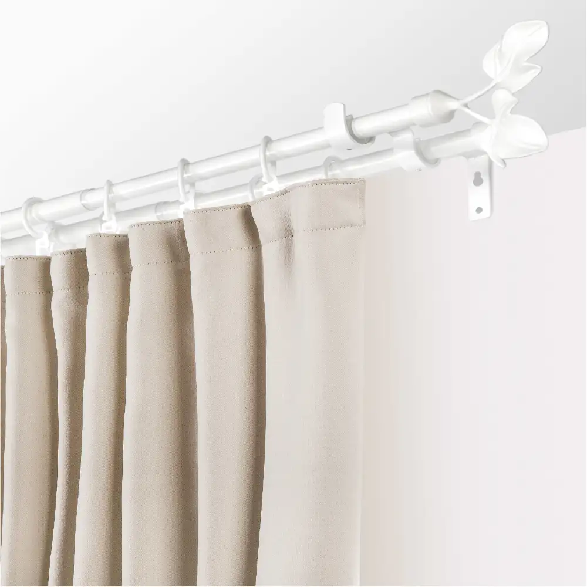

Карнизы
Главная | День-ночь | Блэкаут | С фотопечатью | Плиссе | Жалюзи | Римские шторы | Шторы | Карнизы
Выбор системы крепления для штор является завершающим этапом оформления любого пространства, будь то жилой объект или коммерческое помещение. Несмотря на кажущуюся второстепенность, карниз выполняет критически важную функцию, обеспечивая не только эксплуатационную надежность текстильного декора, но и визуальную целостность архитектурного решения. Современный рынок предлагает широкий спектр инженерных конструкций, требующих профессионального подхода к подбору и монтажу.
Технологические аспекты выбора конструкций
При проектировании интерьера первостепенное значение имеет способ фиксации карниза. Потолочные модели сегодня пользуются повышенным спросом ввиду их способности визуально увеличивать высоту помещения. Использование скрытых ниш, интегрированных в конструкцию подвесного или натяжного потолка, позволяет создать эффект «парящих» штор, что является актуальным трендом в минималистичном дизайне. Настенные системы, в свою очередь, остаются классическим решением, которое оправдано в помещениях с высокими потолками или в интерьерах, где карниз выступает самостоятельным декоративным элементом.
Интеграция автоматизированных систем управления

Цифровизация жилого пространства коснулась и оконного декора. Электрокарнизы становятся стандартом для объектов премиального сегмента. Интеграция приводов в систему «умный дом» позволяет автоматизировать процесс управления освещенностью, что не только повышает уровень комфорта, но и продлевает срок службы текстиля за счет исключения механического воздействия при ручном открывании. При выборе таких систем необходимо заранее предусмотреть наличие точек электропитания и совместимость протоколов управления с общей инженерной сетью здания.
Профессиональный монтаж как залог долговечности
Качество установки карниза определяет не только эстетическое восприятие, но и безопасность эксплуатации. Неправильно рассчитанная нагрузка или несоблюдение геометрии установки могут привести к провисанию профиля и преждевременному износу механизмов. Особое внимание следует уделять подготовке основания: при монтаже на гипсокартонные конструкции необходимо использование закладных элементов, способных выдержать вес шторной композиции. Профессиональный подход к монтажу исключает риск повреждения отделочных материалов и гарантирует бесперебойную работу системы на протяжении всего срока службы.